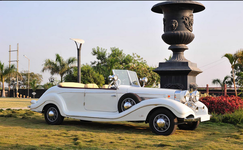
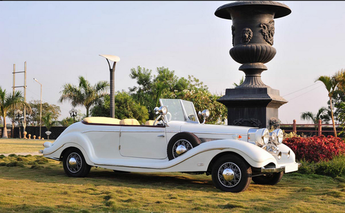

Our Latest News

INSPIRATIONAL NEW GENERATIONS RALLY FUELS YOUTHFUL PASSIONS
Staged in brilliant spring sunshine, Rally the Globe’s first-ever Generations Rally (25-27 March) has been hailed as a brilliant triumph on all fronts – notably in introducing the wonders of the sport to a new, younger audience. Indeed, it was such a stellar sell-out success that a follow-up event has already been announced for the same weekend in 2023!

ON THE ROAD TO THE EDGES OF THE ORIENT
Aware that time is galloping by, we at RtG decided that the recce for this summer’s Ypres to Istanbul Challenge needed to continue. Previously we had covered the section from the start to the Czech / Austrian frontier, but there was still a long way to go.

RALLY THE GLOBE LAUNCH NEW EVENTS IN NORTH AMERICA
RALLY THE GLOBE are excited to announce an incredible new ‘Marathon’ event for vintage and classic cars in 2023, which will see crews journeying 12,000km south from the vast wilderness, unique wildlife and striking landscapes of Alaska to the tropical beaches of the Baja Peninsula in Mexico.